Bienvenue dans Dasohub 👋
Ce manuel te forme aux fonctions principales de Dasohub, l'outil interne de pilotage de Dasolabs. Navigue via la sidebar à gauche ou utilise la recherche en haut pour trouver une fonctionnalité précise.
À qui s'adresse ce manuel
Ce manuel couvre l'ensemble des fonctions de Dasohub. Selon ton rôle (Administrateur, Manager, Commercial, Consultant, Finance), tu n'auras pas accès à toutes les sections. Si une entrée de menu décrite ici n'apparaît pas chez toi, c'est que ton groupe d'accès n'a pas la permission correspondante — contacte l'administrateur.
Premiers pas
Connexion, navigation générale, profil personnel.
Se connecter
Ouvre ton navigateur sur https://hub.dasolabs.be. Tu arrives sur la page de login.
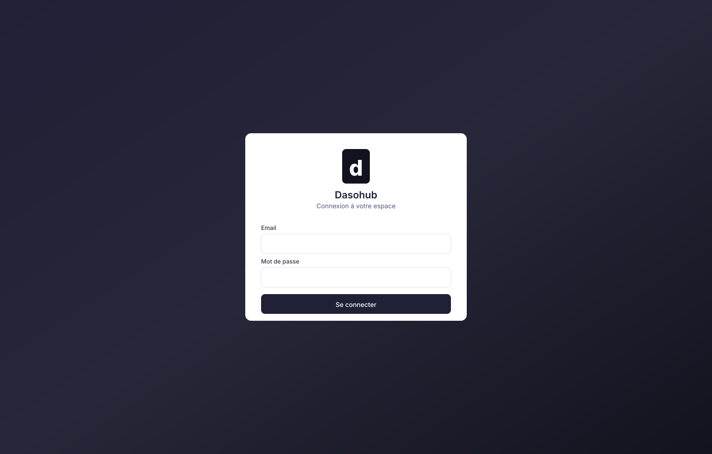
Renseigne ton email
Celui que l'administrateur t'a communiqué (généralement ton email pro).
Renseigne ton mot de passe
Si c'est ta première connexion, change-le immédiatement depuis ton profil /me.
Clique sur "Se connecter"
Tu arrives sur le tableau de bord (ou ton profil personnel si tu n'as pas les droits dashboard).
Vue d'ensemble de l'interface
Une fois connecté, l'écran est divisé en 3 zones :
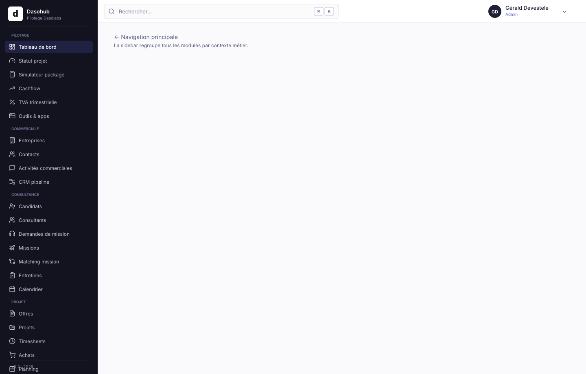
- Sidebar à gauche : navigation entre les modules (Pilotage, Commerciale, Consultance, Projet, Finances, RH & Documents)
- Topbar en haut : barre de recherche au centre (raccourci ⌘K), avatar/menu à droite
- Zone centrale : le contenu de la page en cours
Ton profil personnel (/me)
Accessible via :
- L'avatar en haut à droite → "Mon profil"
- Ou en tapant
/medans la barre d'URL
Sur cette page tu peux :
- Modifier ton nom, prénom, email, photo
- Changer ton mot de passe
- Voir ton groupe d'accès et tes permissions
/me, peu importe ses autres permissions.
Recherche globale (Cmd+K)
Le moyen le plus rapide de naviguer dans Dasohub.
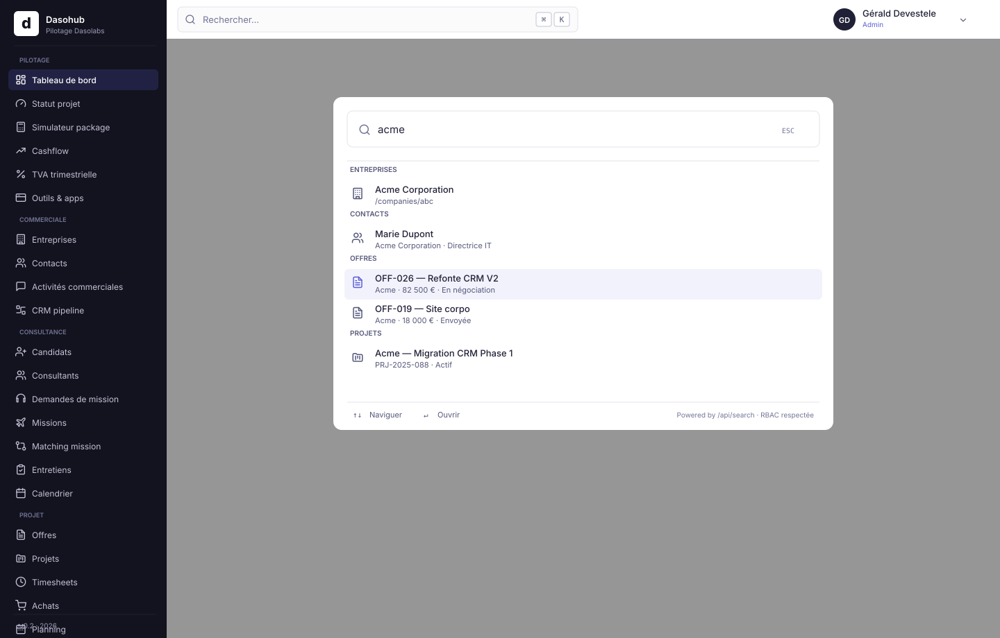
Ouvrir la palette
- Raccourci : ⌘ + K sur Mac, Ctrl + K sur Windows
- Souris : clic sur la barre de recherche dans la topbar
Utilisation
Tape au moins 2 caractères
Les résultats apparaissent groupés par type : Entreprises, Contacts, Offres, Projets, Missions, etc.
Navigue avec ↑ ↓
Les flèches déplacent la sélection dans la liste.
Valide avec Entrée
Tu es immédiatement navigué vers la fiche correspondante.
Recherches malines
Multi-mots
Tape plusieurs mots séparés par des espaces : Zoetis offre janvier. Le système trouve les offres qui matchent tous les mots, dans n'importe quel champ (titre, référence, description, nom client).
Cross-entité
Taper "Zoetis" retourne non seulement la fiche entreprise Zoetis, mais aussi :
- Ses contacts
- Ses offres en cours et passées
- Ses projets actifs
- Ses missions
- Ses demandes de mission
- Ses documents
Par compétence
Tape une compétence (Java, SCADA, etc.) → tu vois tous les candidats et consultants qui l'ont dans leur profil.
Tableau de bord
Vue synthétique de l'état de la boîte. C'est ta page d'atterrissage après connexion.
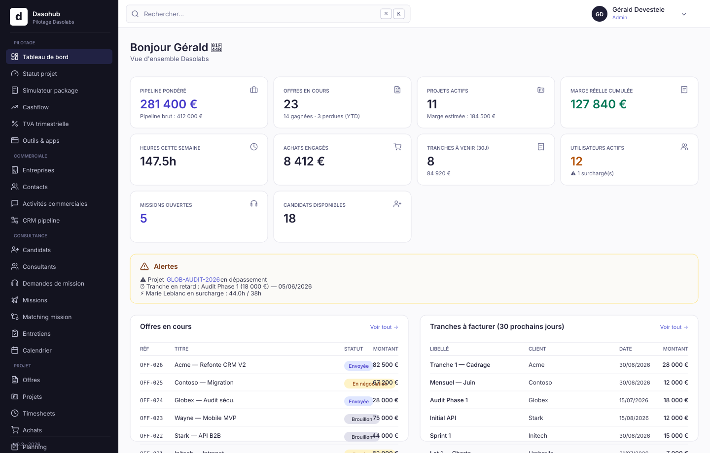
KPIs principaux
| KPI | Que mesure-t-il |
|---|---|
| Pipeline pondéré | Σ (valeur des affaires ouvertes × probabilité de gain) |
| Offres en cours | Brouillons + envoyées + en négociation (uniquement V courante) |
| Projets actifs | Projets en TO_START + ACTIVE |
| Marge réelle cumulée | Marge sur projets terminés (PAID) |
| Heures cette semaine | Total timesheets saisis dans la semaine en cours |
| Tranches à venir (30j) | Milestones à émettre dans les 30 prochains jours |
| Missions ouvertes | Missions consultance actives |
| Candidats disponibles | Candidats avec statut ACTIVE prêts à être proposés |
Sections détaillées
- Offres en cours : top 5 par valeur, avec référence, titre, client, statut, montant
- Tranches à facturer (30 prochains jours) : milestones à émettre prochainement
- Projets en alerte : projets en dépassement budgétaire (rouge) ou approchant le seuil (orange)
Chaque ligne est cliquable et navigue vers la fiche détail.
Statut projet
Suivi des heures vendues vs heures consommées pour chaque projet, avec saisie du "reste à faire".
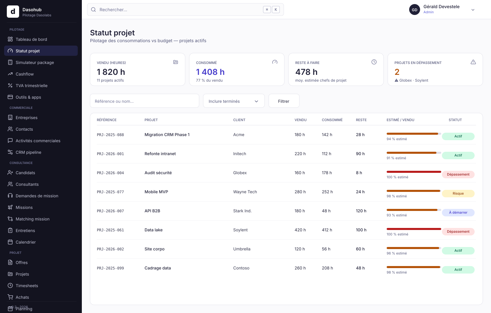
Colonnes du tableau
- Réf, Projet, Client, Statut : identification
- Vendu : heures vendues au client
- Passé : heures consommées (timesheets validés + en attente)
- Reste à faire : estimation restante saisie par l'équipe (éditable inline)
- Total estimé : Passé + Reste à faire
- Avancement : barre de progression visuelle
Code couleur
- Rouge Total estimé > heures vendues → dépassement budgétaire
- Orange Total estimé ≥ 90% du vendu → à surveiller
- Vert Sous le seuil → tout va bien
Mettre à jour "Reste à faire"
Clique directement dans la cellule du projet concerné, tape la nouvelle valeur, valide. Sauvegardé automatiquement.
Cashflow prévisionnel
Trésorerie prévisionnelle annuelle, organisée en grille 12 mois × N lignes.
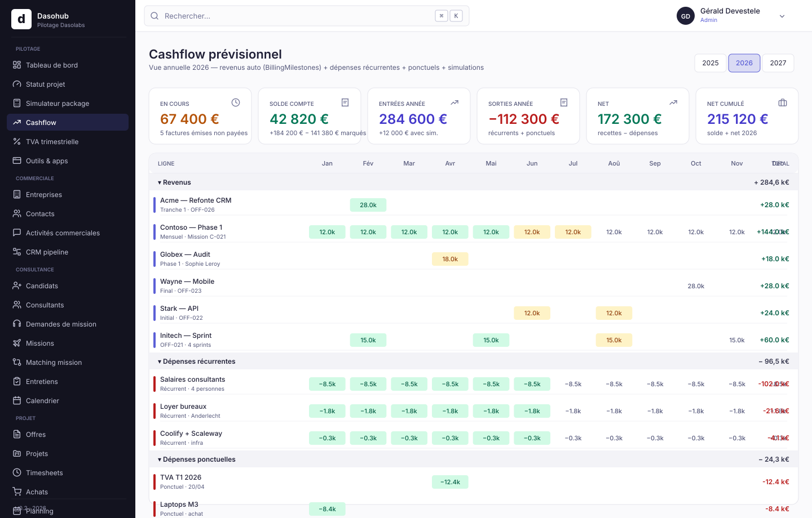
KPIs en haut de page
| KPI | Calcul |
|---|---|
| En cours | Σ TVAC des milestones INVOICED (factures émises non payées) |
| Solde compte | Solde initial + paiements marqués PAID |
| Entrées année | Σ des recettes prévues (hors simulations) |
| Sorties année | Σ des dépenses prévues |
| Net année | Entrées − Sorties |
| Solde fin d'année | Projection du solde au 31/12 |
Vue mensuelle "Ce mois-ci"
Le panneau supérieur affiche les encaissements et sorties du mois en cours, avec :
- Sélecteur de mois (flèches gauche/droite)
- Indicateur "à encaisser" / "à payer"
- Catégorisation des sorties (Assurances, Salaires, Taxes, etc.)
Grille annuelle
Lignes organisées en sections :
- Revenus : factures clients (BillingMilestones), revenus récurrents, recettes ponctuelles
- Dépenses récurrentes : salaires, loyers, abonnements, assurances
- Dépenses ponctuelles : achats, frais exceptionnels
- Engagements : contrats signés à venir
- Simulations : what-if (toggle pour les afficher)
Workflow facture émise → payée
Quand tu émets une facture client, voici le workflow recommandé :
Clique sur la cellule de la tranche
Dans la grille, clique sur le mois où la facture doit être encaissée.
Clique "Marquer facturé"
La tranche passe en statut INVOICED et entre dans le KPI "En cours" en haut de page.
Plus tard : clique "Marquer payé"
Une fois le paiement reçu sur le compte, repasse en mode édition et clique Marquer payé. La tranche sort de "En cours" et entre dans le "Solde compte".
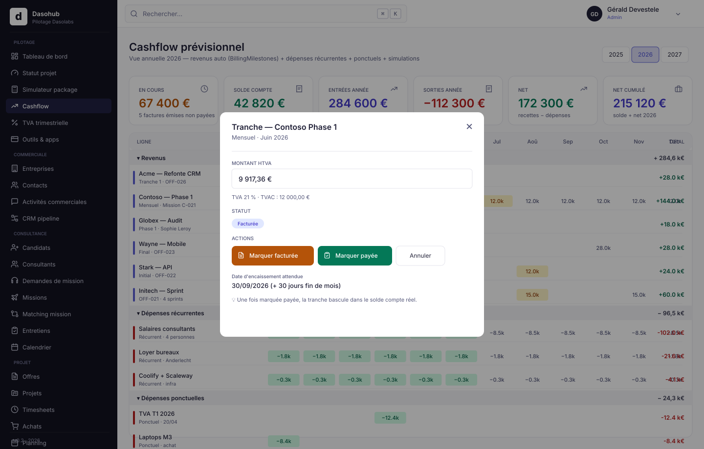
Statuts de tranche (BillingMilestone)
| Statut | Quand l'utiliser |
|---|---|
| Prévue PLANNED | Date connue, livrable pas terminé |
| Prête READY | Livrable validé, OK pour émettre la facture |
| Facturée INVOICED | Facture émise et envoyée (PDF/email) |
| Transmise TRANSMITTED | Envoyée électroniquement via Peppol |
| Payée PAID | Argent reçu sur le compte |
| Annulée CANCELLED | Caduque |
TVA trimestrielle
Aide à la déclaration TVA trimestrielle belge.
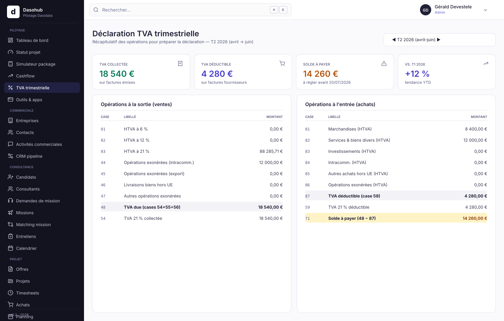
Utilisation
- Sélectionne le trimestre (Q1/Q2/Q3/Q4) et l'année
- Le système affiche : TVA collectée (sur ventes), TVA déductible (sur achats), TVA due (net à reverser)
- Tableau détaillé par facture
- Bouton "Copier le récapitulatif" pour collage dans IntervAT ou ton expert-comptable
Outils & apps
Raccourcis vers les applications externes utilisées par Dasolabs.
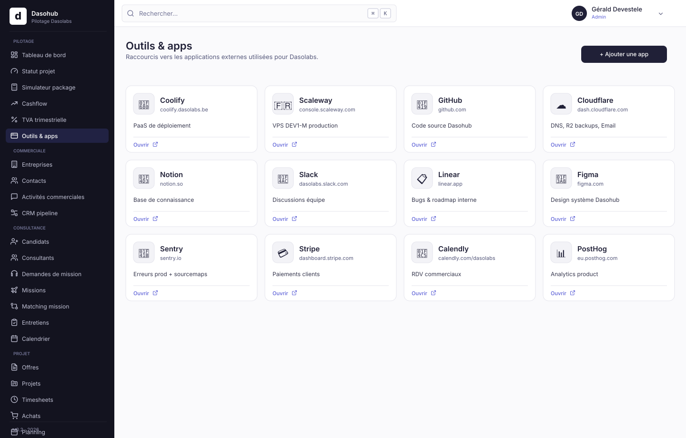
Page Pilotage → Outils & apps : grille de "dalles" cliquables (Scaleway, Coolify, GitHub, Slack, Anthropic Console, Groq Console, etc.). Clic → ouvre l'app dans un nouvel onglet.
Si tu as la permission applinks.write, bouton "Ajouter une app" en haut à droite pour ajouter de nouveaux liens.
Entreprises
Base de tous les clients, prospects, partenaires, fournisseurs.
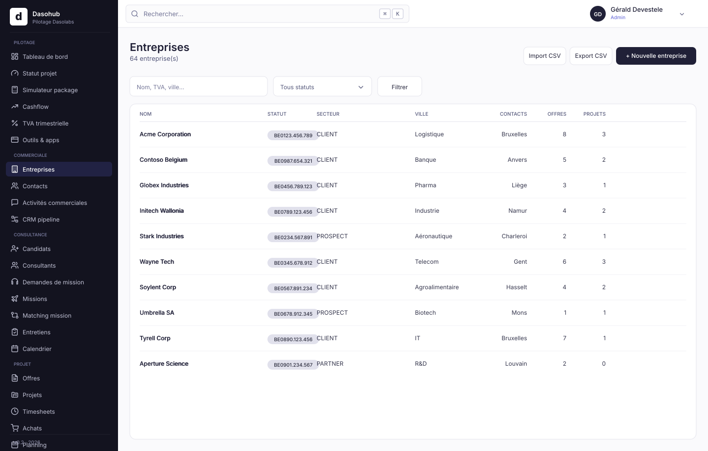
Filtres
- Statut : PROSPECT, CLIENT, PARTNER, SUPPLIER, INACTIVE, ARCHIVED
- Recherche par nom, numéro TVA, ville
Fiche entreprise
Clic sur une ligne → vue détail avec :
- Informations légales (nom, n° TVA, adresse, IBAN, conditions de paiement)
- Contacts associés
- Offres en cours et passées
- Projets actifs et terminés
- Missions
- Achats vers cette entreprise (si fournisseur)
- Documents rattachés
- Historique d'activités commerciales
Créer une entreprise
Bouton "Nouvelle entreprise" en haut à droite. Ou bouton "Import CSV" pour ajout en masse.
Contacts
Personnes physiques rattachées aux entreprises (interlocuteurs commerciaux).
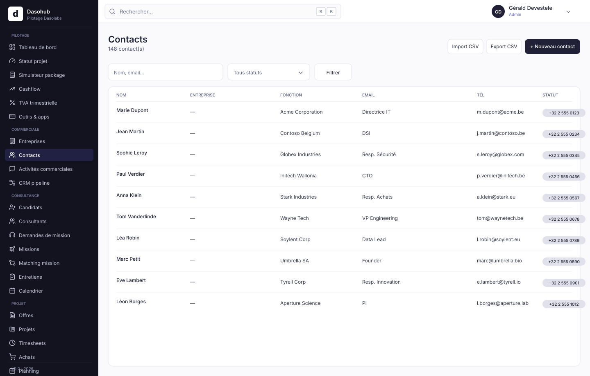
Mêmes fonctionnalités que les entreprises : filtres, import CSV, fiche détail avec coordonnées, entreprise rattachée, activités commerciales liées, documents.
CRM pipeline
Tableau Kanban du pipeline commercial — visualisation par stade.
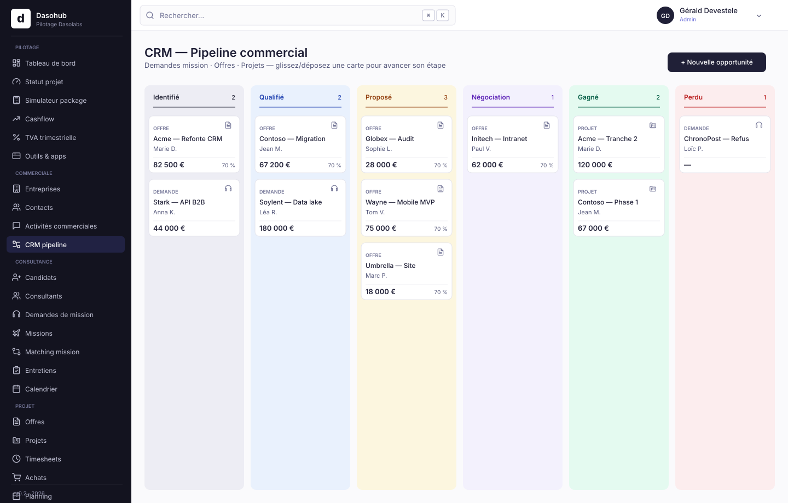
Colonnes
- Identifié : opportunité détectée, pas qualifiée
- Qualifié : besoin confirmé
- Proposé : devis envoyé
- Négociation : en discussion
- Gagné : signé
- Perdu : refusé
- Annulé : toggle pour afficher/masquer
Cartes affichées
Les cartes du Kanban représentent toutes les opportunités, quelle que soit leur source : Opportunités, Demandes de mission, Offres et Projets.
Chaque carte affiche : titre, montant estimé, probabilité, client, owner, date de décision attendue.
Déplacer une carte
- Drag-and-drop entre colonnes (desktop)
- Flèches gauche/droite sur la carte (mobile)
- Bouton ✕ pour "Perdre" avec saisie d'une raison
- Bouton 🚫 pour "Annuler"
KPIs en haut
- Pipeline brut : Σ valeurs des affaires ouvertes
- Carnet pondéré : Σ (valeur × probabilité)
- Gagné YTD : montant gagné depuis le 1er janvier
- Taux de conversion : WON / (WON + LOST)
Créer une nouvelle affaire
Formulaire "Ajouter une affaire" en haut de la page Kanban. Choisis type Consultance (T&M) ou Projet (forfait), saisis titre, client, valeur estimée, owner.
Candidats
Base de données des candidats consultants — personnes pas encore embauchées mais identifiées pour de futures missions.
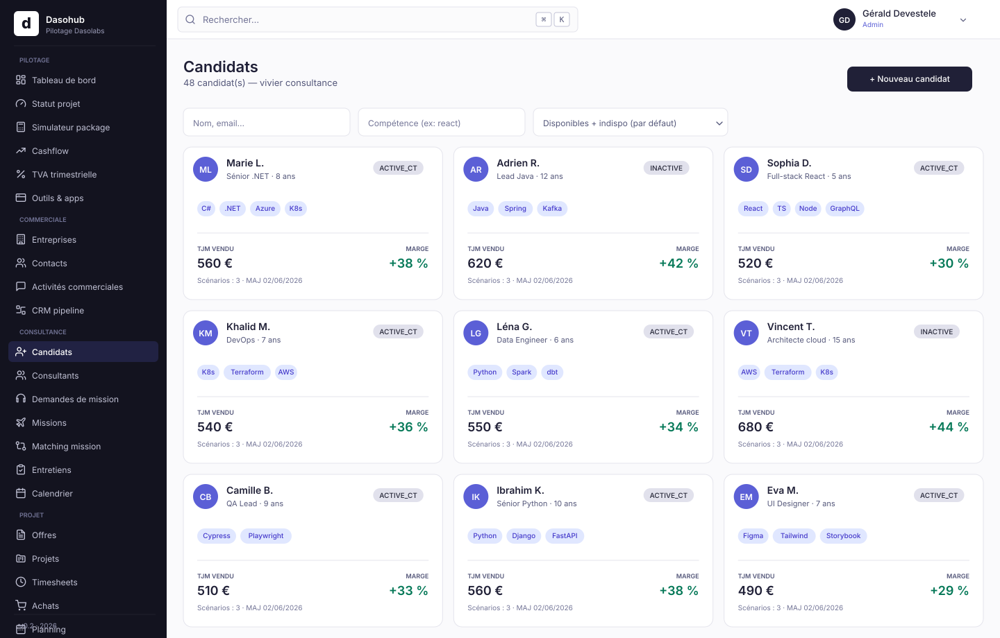
Fiche candidat
- Identité (nom, email, téléphone, LinkedIn, photo)
- Compétences techniques
- Langues parlées
- Tarifs (coût journalier, horaire, tarif min souhaité)
- Disponibilité (date)
- Source (LinkedIn, recommandation, plateforme...)
- Owner (recruteur référent)
- Expériences professionnelles
- CV (upload PDF avec parsing IA)
- Scénarios de package salarial sauvegardés
Parser CV automatique
Page /test/cv-parser : drop un PDF de CV, l'IA extrait nom, email, compétences, expériences. Tu valides et crées le candidat.
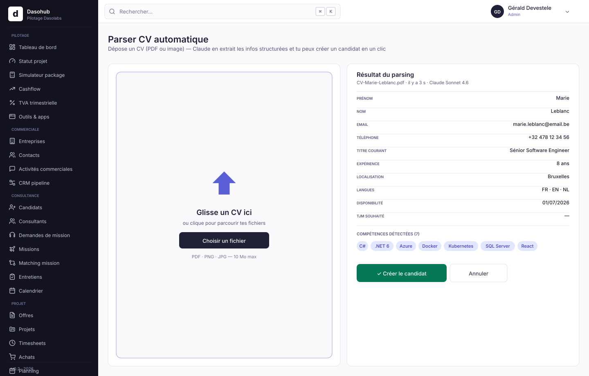
Consultants
Consultants internes Dasolabs (= utilisateurs avec rôle CONSULTANT).
Mêmes informations qu'un candidat, mais avec en plus :
- Missions actuelles et passées
- Timesheets associés
- Notes de frais
- Entretiens (reviews)
- Documents (contrat de travail, etc.)
- Onboarding (si présent)
Demandes de mission & Missions
Cycle de vie complet d'une mission consultance : du besoin client à l'exécution.
1. Demande de mission
Une demande est un besoin entrant d'un client : "j'ai besoin d'un consultant Java senior pendant 3 mois".
Statuts : NEW → QUALIFYING → PRESENTING → CONTRACTED (ou LOST/CANCELLED)
2. Application (candidat proposé)
Depuis la fiche d'une demande, tu présentes 1 à 3 candidats au client. Chaque candidat proposé est une application.
3. Matching automatique
Page /test/matching : algorithme qui calcule un score de match entre une demande et tes candidats/consultants en fonction des skills, séniorité, dispo et tarif.
4. Offre signée → Mission exécutée
Quand l'offre liée est signée, une Mission est créée. C'est l'exécution effective : le consultant Dasolabs est en place chez le client.
Fiche mission
- Référence MIS-AAAA-NNNN + titre
- Demande source + Application sélectionnée (candidat retenu)
- Consultant assigné
- Client final + société intermédiaire (Randstad, etc.)
- Période : startDate, endDate
- Jours estimés
- Tarif journalier facturé client + coût journalier consultant
- TVA applicable
- Timesheets associés
- Milestones de facturation (générés mensuellement)
Générer les factures mensuelles
Sur la fiche mission, bouton "Générer factures mensuelles" crée des BillingMilestone pour chaque mois entre startDate et endDate. Tu peux ensuite éditer le nombre de jours par mois.
Entretiens
Entretiens des consultants : onboarding, check-in, annuel, fin de mission, performance, carrière, offboarding.
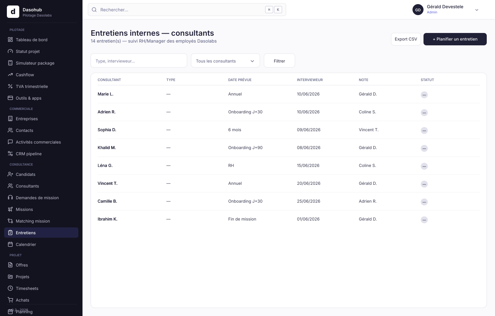
Types d'entretien
- ONBOARDING : entretien d'arrivée
- CHECK_IN : point régulier (mensuel, trimestriel)
- ANNUAL_REVIEW : entretien annuel
- END_OF_MISSION : bilan fin de mission
- PERFORMANCE : feedback performance
- CAREER : évolution carrière
- OFFBOARDING : entretien de départ
Saisie après entretien
Sur la fiche d'un entretien : feedback, objectifs, notes privées (visibles uniquement admin/manager), statut.
Offres
Gestion des devis commerciaux : création, options, versioning, statuts.
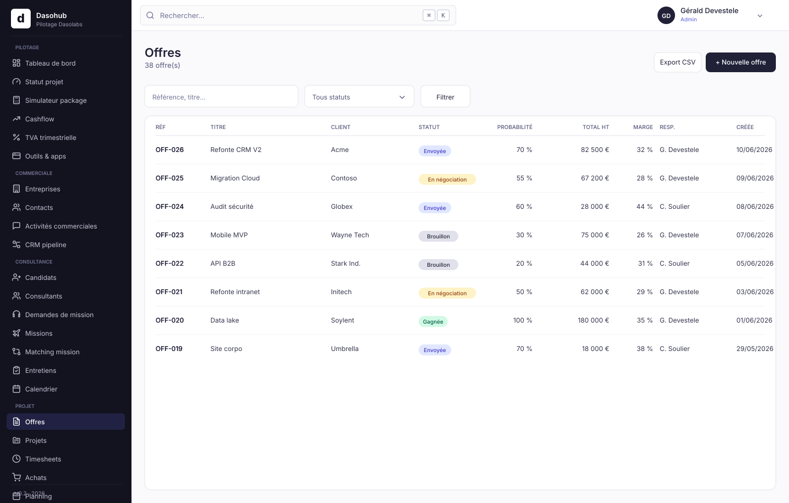
Statuts
| Statut | Modifiable ? | Actions possibles |
|---|---|---|
| Brouillon | Oui (tout) | Toutes |
| Envoyée | Header seulement | Passer en négo, marquer gagnée, perdue, nouvelle version |
| En négociation | Header seulement | Marquer gagnée, perdue, nouvelle version |
| Gagnée | Non (figée) | Voir le projet |
| Perdue | Non | Dupliquer |
| Annulée | Non | — |
Créer une offre
Bouton "Nouvelle offre" en haut à droite. Saisis :
- Titre
- Mode : Projet (forfait) ou Consultance (T&M)
- Client
- Responsable commercial
- Probabilité (par défaut 50%)
- TVA applicable (par défaut 21%, mettre 0% pour client exonéré)
Sections de la fiche offre
Header
Titre, statut, probabilité, client, responsable, dates, description, commentaires, TVA. Éditable sauf si statut terminal (WON/LOST/CANCELLED).
Lignes de devis
Prestations/livrables avec description, type, profil de prestation, quantité, prix unitaire, marge. Totaux calculés automatiquement.
Options
Blocs séparés présentés au client en plus du devis principal. Chacune a son nom, sa description et ses propres lignes. Apparaissent dans le PDF en page 2bis.
Tranches de facturation
Découpage du montant total en jalons :
- Libellé (ex. "Acompte 30%")
- Pourcentage ou montant fixe
- Date d'encaissement attendue
- Déclencheur ("à la signature", "à la livraison module X"...)
Versioning
Une offre Envoyée ou En négociation peut être versionnée si le client demande des modifications de substance :
Bouton "+ Nouvelle version"
Crée une V+1 en statut Brouillon, avec lignes, options et tranches clonées.
L'ancienne version est figée
V1 reste consultable mais en lecture seule. Référence : OFF-XXXX-V2.
Modifie la V2 puis envoie-la
Le marquage gagné se fait sur la V2, pas la V1.
Compléments d'offre
Pour ajouter une prestation à une offre déjà signée (sans créer une V2) : bouton "+ Complément". Référence OFF-XXXX-C1, statut Brouillon, sans lignes (à saisir). Quand le complément est marqué Gagné, ses tranches sont fusionnées dans le projet parent.
PDF d'offre
Bouton "Exporter PDF". PDF 3 pages : Garde+intro / Détails (lignes+tranches) / Conditions. Plus page 2bis (optionnel) si l'offre a des options. Branding Dasohub appliqué (logo, couleurs).
Wizard "Marquer gagnée"
Étape clé : convertir une offre en projet avec configuration des dates de facturation.
Comment l'ouvrir
- Sur la fiche d'une offre → sélecteur "Changer de statut..." → "Marquer gagnée"
- OU drag de la carte vers la colonne "Gagné" dans le CRM Kanban
Dans les deux cas, tu es redirigé vers /offers/[id]/win qui te guide en 2 sections.
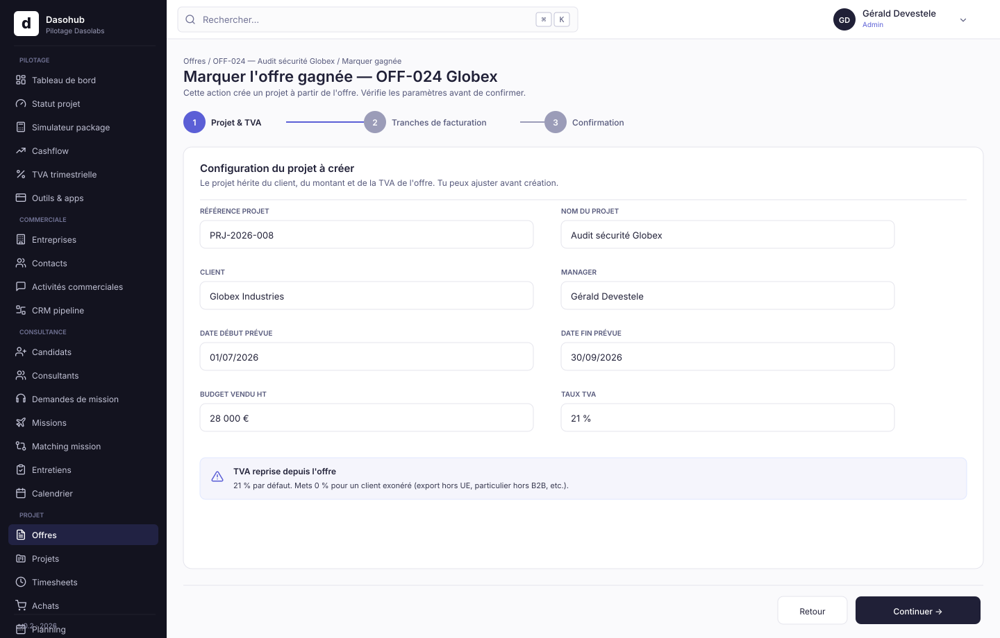
Section 1 — Configuration du projet
- Nom du projet : pré-rempli depuis le titre offre, éditable
- Manager : qui pilote le projet
- Date de démarrage prévu
- Date de fin prévue
- Notes/rappels
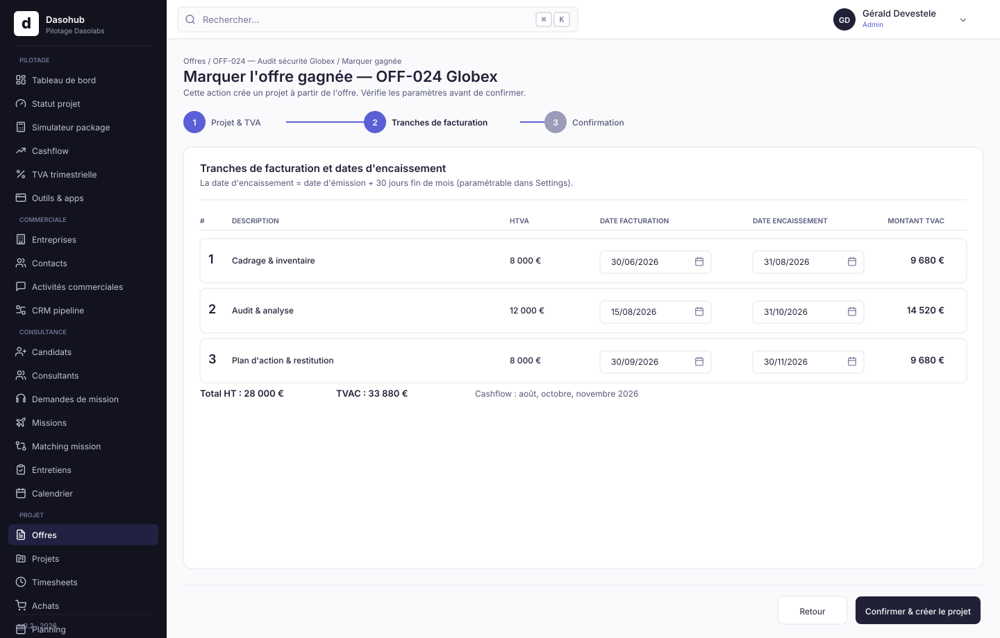
Section 2 — Échéances de facturation
Pour chaque tranche, tu confirmes/ajustes la date d'émission de la facture. Le système calcule automatiquement la date d'encaissement attendu (= facture + 30 jours fin de mois selon ton délai de paiement) et le montant TVAC.
Colonnes du tableau :
| Colonne | Description |
|---|---|
| Tranche | Libellé + % si défini |
| Montant HT | Du devis |
| Date émission facture | Éditable — quand tu prévois d'envoyer la facture |
| Encaissement attendu | Calculé : émission + 30j fin de mois |
| Montant TVAC | HT × (1 + vatRate/100) |
Clic "Créer le projet et marquer gagnée"
En transaction atomique :
- Création du projet avec sa référence (
PRJ-AAAA-NNNN) - Rattachement des tranches au projet
- Stockage de la date d'encaissement comme
expectedAt(= ce qui apparaît dans le cashflow) - Marquage de l'offre Gagnée
Tu es redirigé sur la fiche du nouveau projet.
Projets
Suivi opérationnel des projets gagnés.
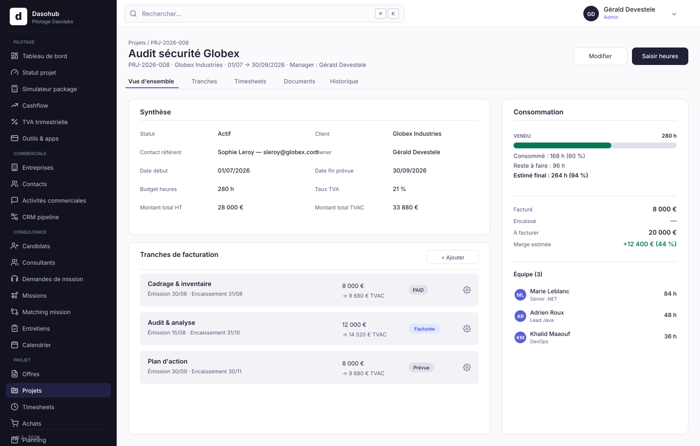
Statuts
- À démarrer TO_START
- Actif ACTIVE
- En pause ON_HOLD
- Terminé COMPLETED
- Annulé CANCELLED
Sections de la fiche
- Header : référence, nom, mode (forfait/T&M), statut, client, manager, dates
- Budget : heures vendues, heures consommées, marge estimée
- Membres : consultants assignés
- Tranches de facturation : voir ci-dessous
- Timesheets liés
- Achats liés
- Entretiens liés
- Documents
Modifier une date d'encaissement
Quand la facturation est confirmée ou décalée, tu modifies la date :
Va sur la fiche projet
Section "Tranches de facturation".
Clique le champ date d'encaissement
Tape la nouvelle date.
Auto-sauvegardé
Le toast "Date mise à jour" confirme. Le cashflow et le dashboard se rafraîchissent.
Modifier le statut d'une tranche
Dropdown statut dans le tableau des tranches. Workflow recommandé :
Prévue → Prête → Facturée → Payée
Timesheets
Saisie quotidienne du temps consultant.
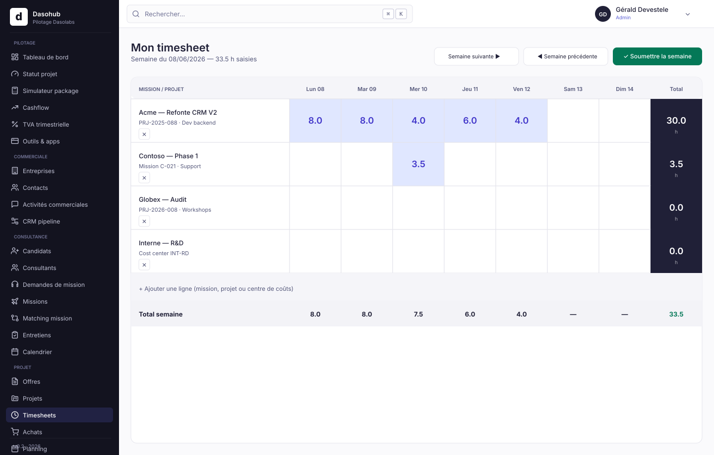
Saisie hebdomadaire
- Grille semaine (lun-dim) × projets/missions/centres de coût
- Pour chaque cellule : tape le nombre d'heures travaillées
- Auto-sauvegardé en brouillon
- Type d'activité par cellule : DEVELOPMENT, ANALYSIS, MEETING, SUPPORT, TRAINING, COMMERCIAL, ADMIN, OTHER
- Bouton "+ Ajouter projet/mission/centre de coût" en bas pour ajouter une cible
Statuts
- DRAFT : brouillon (modifiable)
- SUBMITTED : soumis pour validation
- APPROVED : validé par le manager
- REJECTED : refusé avec note
Bouton "Soumettre la semaine" : passe toutes les saisies DRAFT en SUBMITTED en une fois.
Validation par les managers
Page /timesheet/validation : liste des timesheets SUBMITTED en attente. Pour chaque entrée, boutons Approuver / Rejeter (avec note).
Facturations
Vue d'ensemble des tranches de facturation, tous projets et missions confondus.
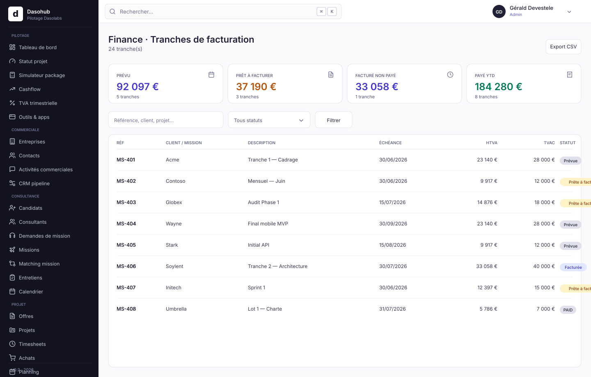
Filtres
- Client
- Projet/Mission
- Statut (PLANNED, READY, INVOICED, TRANSMITTED, PAID, CANCELLED)
- Période
Actions
- Modifier le statut directement dans le dropdown du tableau
- Cliquer pour naviguer vers le projet/mission
- Récap mensuel : total facturé / payé / en attente par mois
Onboarding
Checklist d'arrivée pour chaque nouvel utilisateur Dasolabs.
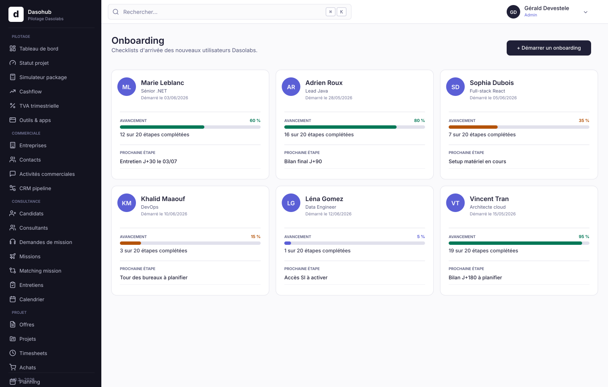
Lancer un onboarding
Formulaire en haut de la page
Sélecteur user, date d'arrivée, template (auto-sélectionné selon rôle).
Clic "Lancer"
Tous les items du template sont copiés dans une nouvelle instance.
Auto-création de 4 entretiens
Planifiés à J+1, J+30, J+90, J+180 dans le module Entretiens.
Suivi d'un onboarding
Page /onboarding/[userId] : checklist groupée par catégorie (Administratif, IT, Formation, Intégration équipe). Coche les items au fur et à mesure. Possible d'ajouter des items à la volée.
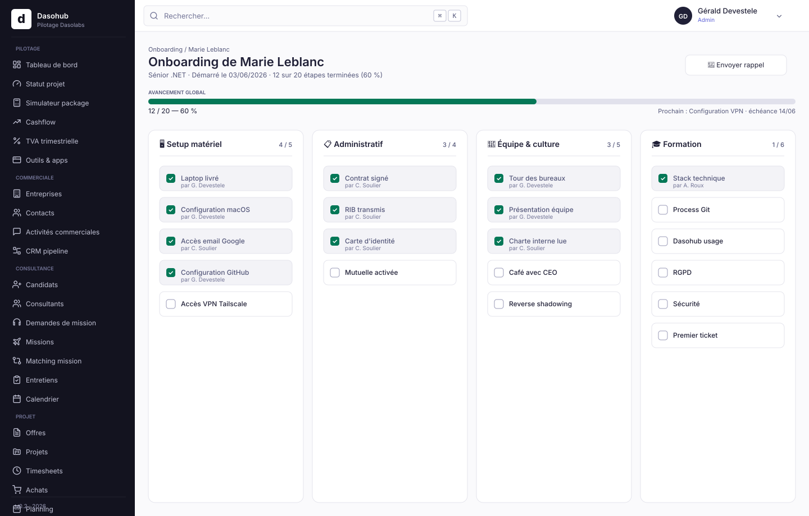
Documents
DMS interne pour stocker contrats, NDA, procédures, livrables, CVs signés.
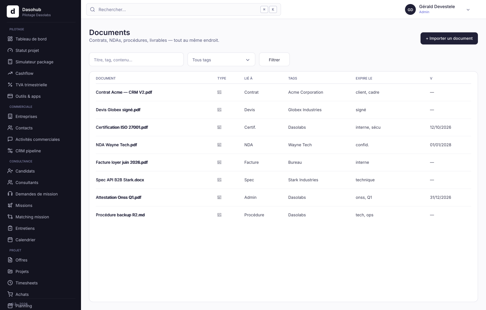
Uploader un document
Drop zone en haut de page
Glisse un fichier ou clique pour parcourir (max 50 MB).
Renseigne les métadonnées
Titre, tags (CSV : "Contrat, NDA, RH"), expiration, description.
(Optionnel) lie à une entité
Entreprise / projet / offre / consultant — le doc apparaîtra sur leur fiche.
Filtres de la liste
- Texte libre (titre, nom fichier, description)
- Tag
- Expire dans 30 jours — alertes d'échéance NDA/contrats
Versioning
Sur la fiche d'un document, panneau "Versions" à droite :
- Version actuelle en vert + bouton télécharger
- Versions précédentes avec leur propre bouton télécharger
- Bouton "Nouvelle version" : drop d'un fichier qui devient V+1
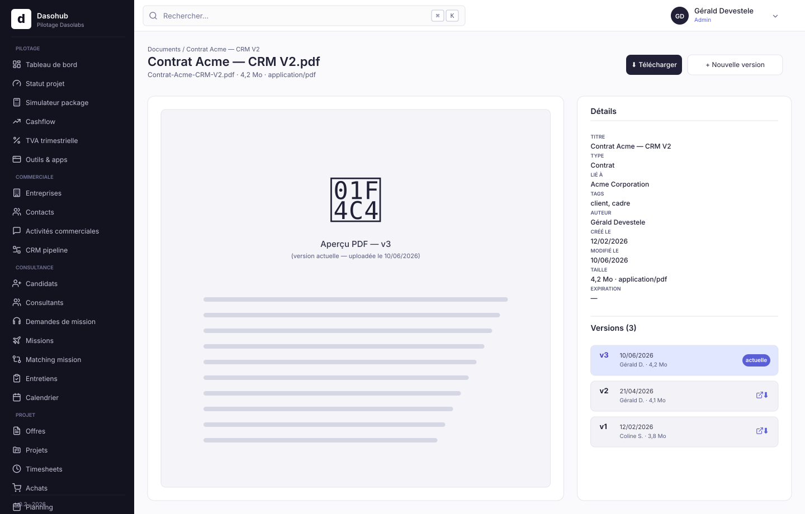
FAQ
Je ne vois pas une entrée de menu
Ton groupe d'accès n'a pas la permission. Demande à l'administrateur.
Mon mot de passe ne fonctionne plus
Pas de reset self-service. Demande à l'administrateur de le réinitialiser.
Je vois "Application error" après une action
Note l'heure exacte et envoie un screenshot à l'admin. Souvent un rafraîchissement (⌘ + R) résout.
Pourquoi mon offre apparaît deux fois dans la liste ?
Tu en as créé deux versions (V1 + V2). Seule la plus récente devrait apparaître. Si les deux apparaissent, contact admin.
Le cashflow ne reflète pas ma facture émise
Vérifie sur la fiche projet/mission que le milestone a bien sa date à la date d'encaissement attendu (pas la date facture). Ajuste si besoin.
Un client est exonéré de TVA, comment configurer ?
Sur l'offre, mets TVA = 0%. Lors du passage en gagné, le projet héritera de ce taux. Le cashflow affichera des montants HT.
Comment marquer une facture comme émise mais pas encore payée ?
Cashflow → clique sur la cellule de la tranche → bouton "Marquer facturé". Le KPI "En cours" la comptera.
Une entrée de cashflow plante quand je clique ?
Probablement un état périmé du navigateur. La modal "Entrée introuvable" propose "Rafraîchir la page" — clique dessus.
Comment retrouver une ancienne version d'un document ?
Ouvre la fiche du document → panneau "Versions" à droite → clique l'icône télécharger de la version voulue.
Comment retrouver une ancienne version d'une offre ?
Ouvre la version actuelle → en haut, lien vers "précédente : OFF-XXXX-V1".
Raccourcis clavier
| Raccourci | Action |
|---|---|
| ⌘ + K (Mac) / Ctrl + K (Win) | Ouvrir la palette de recherche globale |
| Esc | Fermer modal/palette |
| ↑ ↓ | Naviguer dans la palette de recherche |
| Entrée | Valider sélection palette |
| Tab | Naviguer entre champs de formulaire |
| ⌘ + R | Rafraîchir la page |
| ⌘ + Shift + R | Hard refresh (ignore le cache) |